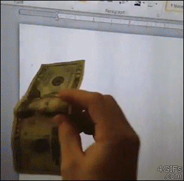

Creating and using templates
in R Markdown
Chester Ismay
Reed College / Pacific University
Portland R User Group
Wednesday, August 17, 2016
Google Form for Questions: http://bit.ly/rmd-pdx
Slides available at http://bit.ly/rmd-pdx-talk
Humble beginnings

Slides available at http://bit.ly/rmd-pdx-talk
The Preminaries
RStudio and R Markdown
- Nice user interface
- RStudio in Desktop and Server versions
- Reproducible research using R Markdown
Slides available at http://bit.ly/rmd-pdx-talk
Copy-and-paste never works like this…

Slides available at http://bit.ly/rmd-pdx-talk
To the beeR!

Slides available at http://bit.ly/rmd-pdx-talk
My Untappd ratings
Slides available at http://bit.ly/rmd-pdx-talk
My Untappd R data package
https://github.com/ismayc/izzyuntappd
Slides available at http://bit.ly/rmd-pdx-talk
DEMO 1
install.packages("devtools")
devtools::install_github("ismayc/izzyuntappd")File -> New File -> R Markdown ->
From Template -> walkthrough
Slides available at http://bit.ly/rmd-pdx-talk
Talking about templates via templates

Slides available at http://bit.ly/rmd-pdx-talk
DEMO 2
Creating your own template package
Creating a basic template package in R
Slides available at http://bit.ly/rmd-pdx-talk
Distributing files
chemistr package for Chem 101/102 at Reed
install.packages("devtools")
devtools::install_github("ismayc/chemistr")File -> New File -> R Markdown -> From Template -> .
Slides available at http://bit.ly/rmd-pdx-talk
Distributing files
oilabs package for MATH 141 at Reed
install.packages("devtools")
devtools::install_github("Reedies/oilabs")File -> New File -> R Markdown -> From Template -> .
Slides available at http://bit.ly/rmd-pdx-talk
Distributing files
R version of the JMP lab manual for Bio 101/102 at Reed
install.packages("devtools")
devtools::install_github("ismayc/reedtemplates")File -> New File -> R Markdown ->
From Template -> Bio 101/102 RStudio Manual
Slides available at http://bit.ly/rmd-pdx-talk
A snazzy template
install.packages("devtools")
devtools::install_github("ismayc/reedtemplates")File -> New File -> R Markdown ->
From Template -> Package Loader
Slides available at http://bit.ly/rmd-pdx-talk
The Beasts!
(old) R Markdown Senior Thesis Template
install.packages("devtools")
devtools::install_github("ismayc/reedtemplates")File -> New File -> R Markdown ->
From Template -> Reed Senior Thesis
Slides available at http://bit.ly/rmd-pdx-talk
The Beasts!
(BRAND NEW) R Markdown Senior Thesis Template
install.packages("devtools")
devtools::install_github("ismayc/thesisdown")File -> New File -> R Markdown ->
From Template -> Thesis
Slides available at http://bit.ly/rmd-pdx-talk
BONUS
Parameterized Reports
Slides available at http://bit.ly/rmd-pdx-talk
Useful links
A bookdown book about creating books with bookdown
Shameless plugs
Creating a basic template package in R
Getting used to R, RStudio, and R Markdown gitbook
Resulting gitbook for Reed Thesis template
Slides available at http://bit.ly/rmd-pdx-talk
Thanks!
Code for slide creation on my GitHub page
Slides available at https://ismayc.github.io/workshops/rmd-pdx.html
Feedback is welcomed and encouraged:
Let’s go have beer!
sessionInfo()## R version 3.3.0 (2016-05-03)
## Platform: x86_64-apple-darwin13.4.0 (64-bit)
## Running under: OS X 10.12 (unknown)
##
## locale:
## [1] en_US.UTF-8/en_US.UTF-8/en_US.UTF-8/C/en_US.UTF-8/en_US.UTF-8
##
## attached base packages:
## [1] stats graphics grDevices utils datasets methods base
##
## other attached packages:
## [1] revealjs_0.7 rmarkdown_1.0.9002 knitr_1.14 ggplot2_2.1.0 dplyr_0.5.0
##
## loaded via a namespace (and not attached):
## [1] Rcpp_0.12.6 digest_0.6.10 assertthat_0.1 plyr_1.8.4 grid_3.3.0
## [6] R6_2.1.2 gtable_0.2.0 DBI_0.5 formatR_1.4 magrittr_1.5
## [11] scales_0.4.0 evaluate_0.9 stringi_1.1.1 tools_3.3.0 stringr_1.0.0
## [16] munsell_0.4.3 yaml_2.1.13 colorspace_1.2-6 htmltools_0.3.5 tibble_1.1